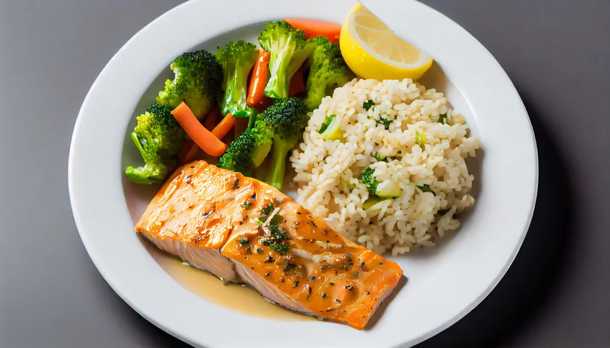
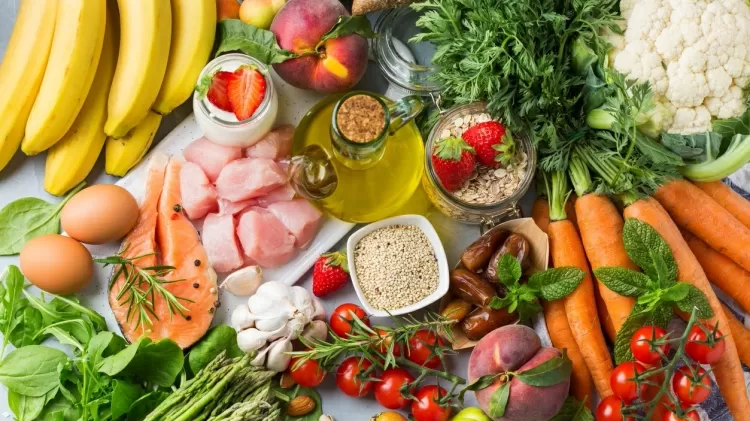

Postado 08/01/2024
Dieta low carb: os alimentos que ajudam a retardar o ganho de peso, mostra um novo estudo; veja quais
Postado 12/06/2024
Quer virar vegetariano? Saiba como fazer substituições na dieta
Postado 05/06/2024
Veja 6 benefícios da dieta mediterrânea para mulheres, segundo a ciência
Postado 23/08/2024
Redução drástica: como funciona
dieta que fez Suzy Rêgo emagrecer
Postado 08/10/2023
Dieta paleo e andar descalço:
hábitos que remetem às origens da civilização voltam à moda

Postado 10/03/2022
Dieta flexitariana: conheça tipo de 'vegetarianismo' que aceita carne